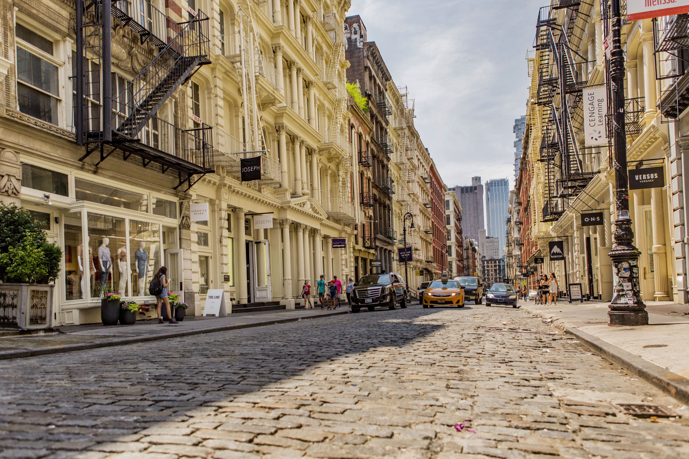
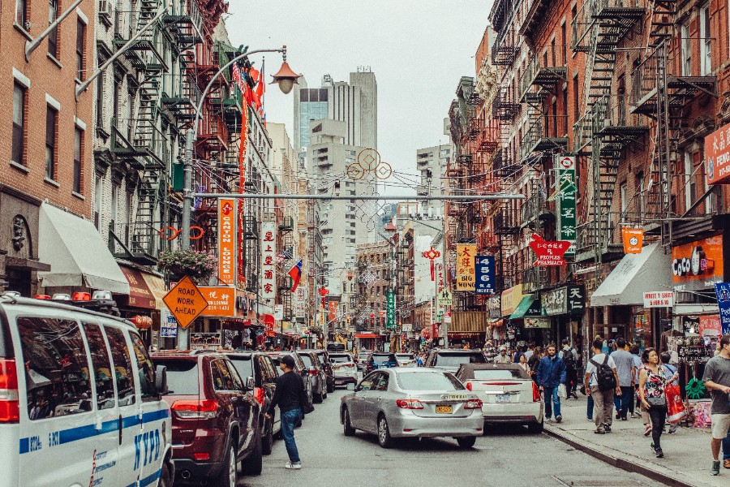

The same city. A completely different experience.
The difference is evident if you've ever been to SoHo. There the atmosphere is different. People sip coffee and stroll around comfortably while window shopping. Time in that area seems to pass slower, the air feeling lighter. The area is a complete contrast from other places in New York.
SoHo moves because it can and it will, while Canal Street moves because it must. It's a different way of life in SoHo, with the disparity being in who gets to slow down and who doesn't.

SoHo — where time moves a little slower
"SoHo moves because it can. Canal Street moves because it must."
The same city that celebrates progress and ambition often depends on the quiet work and exhaustion of those who can't afford to stop. For many New Yorkers, being a New Yorker usually means being strong and hardworking, but maybe that idea has gone too far. Strength shouldn't mean never resting.
Chinatown proves that resilience and burnout can look the same from the outside. People here have built a community that keeps the city alive, but it's also one that sacrifices rest for survival. The truth is, New York's energy comes from the effort of the people who rarely get to enjoy the city.

Canal Street — always moving, always working